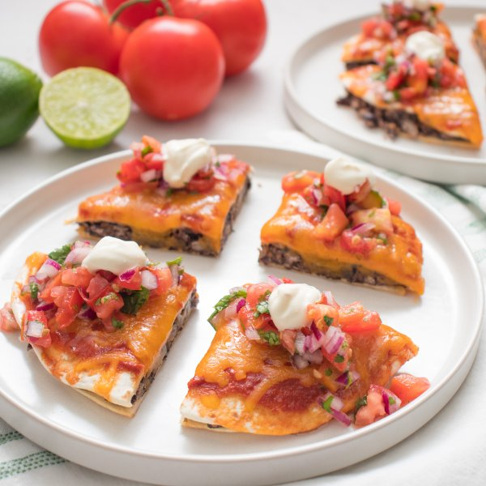

Baked Black Bean & Cheddar "Mexican Pizza" with Pico de Gallo

Total Time
35 min
Nutrition (per serving)
575.4 kcalCalories
29.2 gProtein
78.5 gCarbs
17.7 gFat
Full nutrition table
| Calories | 575.4 kcal |
| Total fat | 17.7 g |
| Saturated fat | 7.1 g |
| Trans fat | 1 g |
| Cholesterol | 30.5 mg |
| Sodium | 1120.8 mg |
| Carbohydrates | 78.5 g |
| Fiber | 18.5 g |
| Sugars | 10.7 g |
| Protein | 29.2 g |
| Potassium | 1296.1 mg |
| Calcium | 421.6 mg |
| Iron | 7 mg |
| Vitamin A | 1509.6 IU |
| Vitamin C | 34.9 mg |
| Vitamin D | 6.8 IU |
Cookware
Ingredients
- 2 (15 oz) cansblack beans
- ½ (8 oz) blockcheddar cheese
- 8 fl ozchicken or vegetable broth
- 1 small bunchcilantro
- 2limes
- ½ cupplain Greek yogurt
- 1 mediumred onion
- 8small flour tortillas
- 4tomatoes
- 3 tbsptomato paste
- chili powder
- cumin, ground
- extra virgin olive oil
- garlic powder
- onion powder
- salt
Steps
- Preheat oven to 425°F and coat a large baking sheet pan with a thin layer of oil.2 tsp extra virgin olive oil
- Meanwhile, preheat a small saucepan over medium-high heat.
- Add broth, tomato paste, and spices to the pan. Bring to a simmer, whisking frequently, and cook until slightly thickened, 3-4 minutes. Remove sauce from the heat and set aside.8 fl oz (1 cup) chicken or vegetable broth
3 tbsp tomato paste
½ tsp cumin
½ tsp garlic powder
½ tsp chili powder
¼ tsp salt - Meanwhile, drain and rinse the beans in a colander.2 (15 oz) cans black beans
- Place beans and spices in a medium bowl. Crush with a fork or potato masher until almost smooth, with some texture remaining; set aside.1 tsp cumin
1 tsp chili powder
1 tsp salt
½ tsp garlic powder
½ tsp onion powder - Coarsely grate cheddar.½ (8 oz) block cheddar cheese
- Place half the tortillas on the baking sheet and spread with bean filling; place remaining tortillas on top, pressing gently to adhere. (Reserve bowl for later use.)8 small flour tortillas
- Spoon sauce over the tortillas and top with cheese. Place in the oven and bake until the cheese is melted and bubbly, 8-10 minutes.
- Meanwhile, wash and dry the fresh produce.2 limes
4 tomatoes
1 small bunch cilantro - Juice limes into the reserved bowl and add salt.1 tsp salt
- Small dice tomatoes. Peel and small dice onion; add both to the bowl with the lime.1 medium red onion
- Shave cilantro leaves off the stems; discard stems and mince the leaves. Add to the bowl and stir to combine the pico de gallo.
- Remove pizzas from the oven and cut into quarters.
- Divide pizzas between plates; top with pico de gallo and yogurt. Enjoy!½ cup plain Greek yogurt